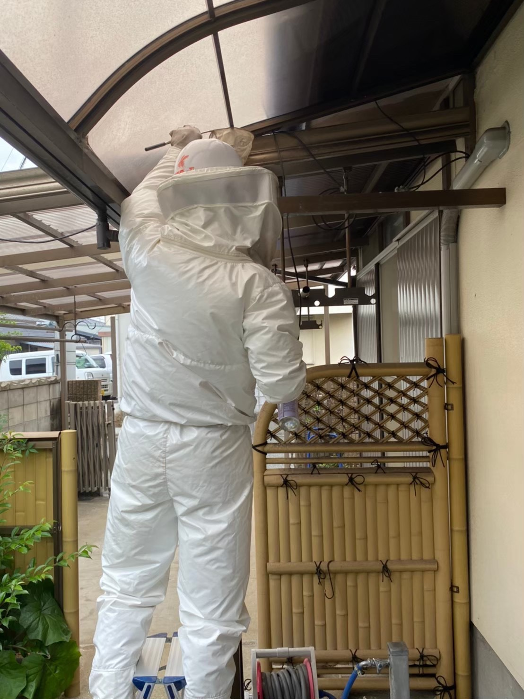

店舗案内
代表挨拶

蜂駆除 あらいのページをご覧いただき、ありがとうございます。
福岡県久留米市を拠点に、福岡県・佐賀県・熊本県を中心に蜂の巣の駆除を行っています。蜂の巣を見つけたときの不安なお気持ちは、よくわかります。
当店は「蜂」に関わるサービスを展開しております。どんなトラブルにも、素早く誠実に対処致します。
蜂駆除のほか、鍵の開錠・修理・交換にも対応しています。暮らしのトラブルでお困りでしたら、まずはお気軽にお電話ください。
蜂駆除 あらい 代表
作業風景
蜂駆除作業は、必ず防護服を着用して安全に行います。お客様にも安心していただけるよう、作業前に手順をご説明し、ご納得いただいてから作業に入ります。

会社概要
| 店舗名 | 蜂駆除 あらい |
| 所在地 | 〒830-0001 福岡県久留米市小森野6丁目18-27 |
| 電話番号 | 090-8451-0837 |
| 営業時間 | 24時間営業 |
| 定休日 | 年中無休 |
| 対応エリア | 福岡県・佐賀県・熊本県（全域対応） |
| 事業内容 | 蜂駆除、鍵交換（開錠・修理・交換） |
| お支払い方法 | 現金、クレジットカード（VISA・JCB・American Express） |